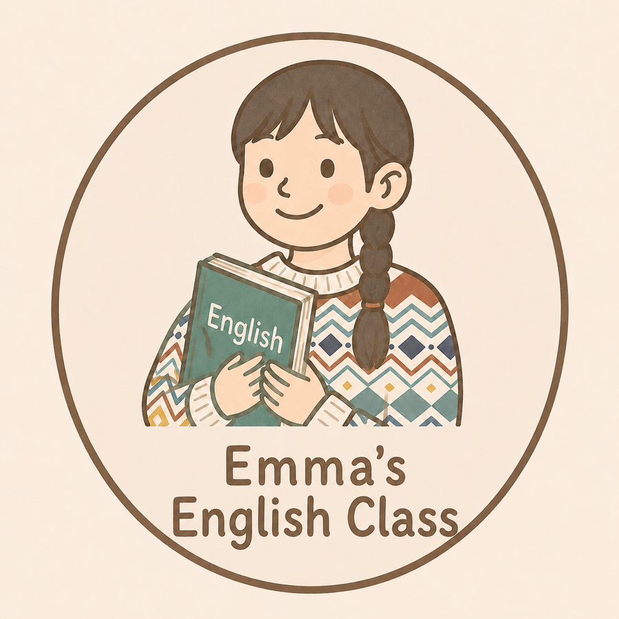

Mindset · Specific Goal · AI–3PReview–3R · Learning Habit

英文老師 · 文學女孩 · 閱讀推廣者
擁有英語教學碩士學位，累積將近二十年的英語教學經驗，教過的學生從 6 歲到 60 歲。
除了教英文，我也非常熱愛學習英文——到現在每天都還在持續精進。
因為親身走過學習路上的挫折與自我懷疑，我更想幫你避開常見的陷阱，把力氣花在真正能帶來進步的事情上。
從心態出發，走到可以每天執行的學習習慣